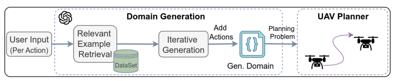
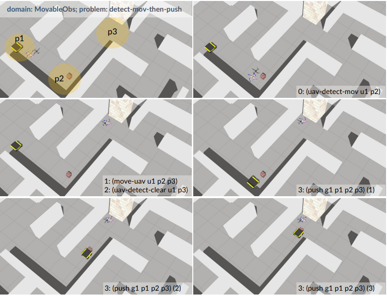

|
Songhao Huang (Site is under construction) I'm a first-year PhD student @ Romi Lab, PolyU, and my research focuses on Multi-robot System and Robot Learning. I am advised by Prof. David Navarro-Alarcon. |

|
Research |

|
Safe Interval Motion Planning for Quadrotors in Dynamic Environments.
Songhao Huang*, Yuwei Wu*, Yuezhan Tao, Vijay Kumar ICRA, 2025 video / arXiv Using Safe interval motion planning and gradient-based trajectory optimization for UAV motion planning in dynamic environments. |
|


|
SPAR: Scalable LLM-based PDDL Domain Generation for Aerial Robotics
Songhao Huang*, Yuwei Wu*, Guangyao Shi, Gaurav S. Sukhatme, Vijay Kumar Preprint arXiv Using LLM in PDDL domain generation for robot task planning. |
Miscellanea |
|
Feel free to steal this website's source code. Do not scrape the HTML from this page itself, as it includes analytics tags that you do not want on your own website — use the github code instead. Also, consider using Leonid Keselman's Jekyll fork of this page. |